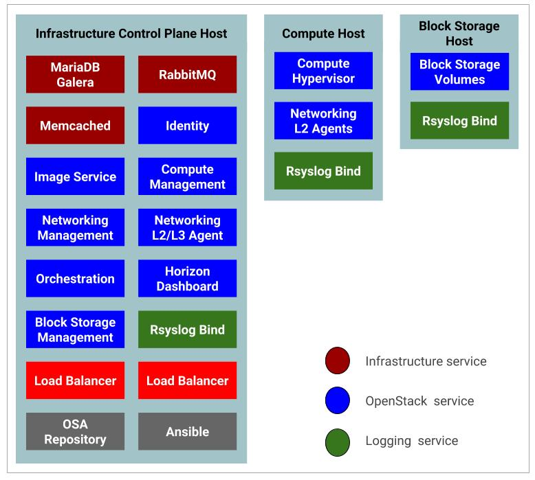
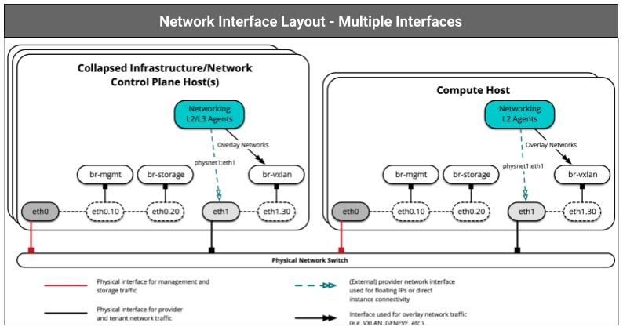

Test Environment Example
Here is an example test environment for a working OpenStack-Ansible (OSA) deployment with a small number of servers.
This example environment has the following characteristics:
- One infrastructure node for the control plane host (32 vCPU, 128 GB RAM, 2 TB RAID1 HDD)
- One compute node (32 vCPU, 128 GB RAM, 2 TB RAID1 HDD)
- One Storage node (2 vCPU, 64 GB RAM, 2 TB RAID1 HDD).
- Dual Port Network Interface Card (NIC) for each host
- Internet access via the router address
192.168.10.1on the Management Network
The following figure depicts this test environment and its components.

Configuring the network¶
OpenStack-Ansible uses bridges to connect physical and logical network interfaces on the host to virtual network interfaces within containers. Target hosts need to be configured with the following network bridges:
| Bridge name | Best configured on | With a static IP* |
|---|---|---|
br-mgmt |
On every node | Always |
br-storage |
On every storage node | When component is deployed on metal |
| On every compute node | Always | |
br-vxlan |
On every network node | When component is deployed on metal |
| On every compute node | Always | |
br-vlan |
On every network node | Never |
| On every compute node | Never |
Host Network Bridges Information¶
This section describes the Network Bridges used by OpenStack hosts
LXC internal: lxcbr0¶
The lxcbr0 bridge is required for LXC, but OpenStack-Ansible configures it automatically. It provides external (typically Internet) connectivity to containers with dnsmasq (DHCP/DNS) + NAT.
This bridge does not directly attach to any physical or logical interfaces on the host because iptables handles connectivity. It attaches to eth0 in each container.
The container network that the bridge attaches to is configurable in the openstack_user_config.yml file in the provider_networks dictionary.
Container management:br-mgmt¶
The br-mgmt bridge provides management of and communication between the infrastructure and OpenStack services.
The bridge attaches to a physical or logical interface, typically a bond0 VLAN subinterface. It also attaches to eth1 in each container.
The container network interface that the bridge attaches to is configurable in the openstack_user_config.yml file.
Storage:br-storage¶
The br-storage bridge provides segregated access to Block Storage devices between OpenStack services and Block Storage devices.
The bridge attaches to a physical or logical interface, typically a bond0 VLAN subinterface. It also attaches to eth2 in each associated container.
The container network interface that the bridge attaches to is configurable in the openstack_user_config.yml file.
OpenStack Networking tunnel:br-vxlan¶
The br-vxlan bridge is required if the environment is configured to allow projects to create virtual networks using VXLAN. It provides the interface for virtual (VXLAN) tunnel networks.
The bridge attaches to a physical or logical interface, typically a bond1 VLAN subinterface. It also attaches to eth10 in each associated container.
The container network interface it attaches to is configurable in the openstack_user_config.yml file.
OpenStack Networking provider:br-vlan¶
The br-vlan bridge is provides infrastructure for VLAN tagged or flat (no VLAN tag) networks.
The bridge attaches to a physical or logical interface, typically bond1. It attaches to eth11 for VLAN type networks in each associated container. It is not assigned an IP address because it handles only layer 2 connectivity.
The container network interface that the bridge attaches to is configurable in the openstack_user_config.yml file.
Network Architecture¶
In our test environment each has a dual port Ethernet card and we will configure our test environment network as a multiple interfaces as depicted by the diagram below.

Network CIDR/VLAN Assignments¶
The following CIDR and VLAN assignments are used for this environment.
| Network | CIDR | VLAN |
|---|---|---|
| Management Network | 172.29.236.0/22 |
10 |
| Tunnel (VXLAN) Network | 172.29.240.0/22 |
30 |
| Storage Network | 172.29.244.0/22 |
20 |
IP Assignments¶
The following host name and IP address assignments are used for this environment.
| Host name | Management IP | Tunnel (VxLAN) I/P | Storage IP |
|---|---|---|---|
infra1 |
172.29.236.11 |
172.29.240.11 |
172.29.244.11 |
compute1 |
172.29.236.12 |
172.29.240.12 |
172.29.244.12 |
storage1 |
172.29.236.13 |
- |
172.29.244.13 |
Configuring the Operating System¶
This section covers how to install and configure Ubuntu 18.04 LTS server in our OpenStack-Ansible host.
Install the Operating System¶
If your have downloaded your Ubuntu server image download the installation ISO from alternate download section.
Alternative Ubuntu Server installer¶
Since we require advanced networking and storage features such as; LVM, RAID, multipath, vlans, bonds, or re-using existing partitions, you will want to continue to use the alternate installer.
Download the alternate installer
Suggested Partitions Scheme for OpenStack Nodes.¶
We recommend you the following partitions scheme for your node installation. We will be using LVM devices created on a Volume Group by the short hostname (hostname -s) of the system. For example vg_infra1 for infra1.
| Device | Size | Type | Mount Point |
|---|---|---|---|
/dev/vg_infra1/lv_boot |
200MB |
EXT4 |
/boot |
/dev/vg_infra1/lv_swap |
RAM+2G |
EXT4 |
none |
/dev/vg_infra1/lv_root |
100G |
EXT4 |
/ |
You can apply the same for the compute1 and storage1 nodes as well.
:bulb: Keep the remaining space in-allocated since we are going to user them later for other uses
Note
We do not cover on how to install the Ubuntu server here. We assume that you already know howto do it.
Important
We also recommend setting your locale to en_US.UTF-8. Other locales might work, but they are not tested or supported.
Configure Ubuntu¶
1. Update package source lists
sudo apt-get update
sudo apt-get dist-upgrade
sudo systemctl reboot
3.13.0-34-generic or later:
uname -r
sudo apt-get install bridge-utils debootstrap ifenslave ifenslave-2.6 lsof lvm2 chrony openssh-server sudo tcpdump vlan python
sudo apt install linux-image-extra-$(uname -r)
/etc/modules file to enable VLAN and bond interfaces:
sudo echo 'bonding' >> /etc/modules && sudo echo '8021q' >> /etc/modules
/etc/chrony/chrony.conf to synchronize with a suitable time source and restart the service:
sudo systemctl enable chrony sudo restart chrony
sudo systemctl reboot
Configure The Network Interfaces.¶
This section describes how to configure network interfaces of your host so that it can be used in OpenStack Ansible deployment.
Changing netplan to ifupdown¶
The classic ifupdown network configuration used in Debian/Ubuntu has been replaced by netplan on Ubuntu 18.04 server system.
You can view the current netplan configuration using the command below. You may have a different name for your YML as per your installation environment.
cat /etc/netplan/01-netcfg.yaml
You will get an output like below.
# This file describes the network interfaces available on your system
# For more information, see netplan(5).
network:
version: 2
renderer: networkd
ethernets:
enp0s3:
dhcp4: yes
ifupdown on this system, run:
sudo apt install ifupdown
Consistent Naming for Network Interfaces¶
New versions of Linux Kernel, including the one in our Ubuntu server name the network interfaces using a new convention based on the network interface type (PCI, PCIe, Onboard, Wireless, etc.,) and the relative position of the motherboard which we have slotted the specific card. For example, you may get interface names like enp0s3, eno1, p2p1 etc. While this is an advantageous in many cases as it provides consist ant name of each interface during our OpenStack-Ansible deployment we are going to rename them back to our traditional naming convention eth0, eth1, and so on.
To get back to ethX again will do the following configurations
sudo nano /etc/default/grub
GRUB_CMDLINE_LINUX and add the following net.ifnames=0 biosdevname=0.
From:
GRUB_CMDLINE_LINUX=""
GRUB_CMDLINE_LINUX="net.ifnames=0 biosdevname=0"
sudo grub-mkconfig -o /boot/grub/grub.cfg
sudo systemctl reboot
ip link show
1: lo: <LOOPBACK,UP,LOWER_UP> mtu 65536 qdisc noqueue state UNKNOWN mode DEFAULT group default qlen 1000 link/loopback 00:00:00:00:00:00 brd 00:00:00:00:00:00 2: eth0: <BROADCAST,MULTICAST,UP,LOWER_UP> mtu 1500 qdisc fq_codel state UP mode DEFAULT group default qlen 1000 link/ether 08:00:27:cb:31:f1 brd ff:ff:ff:ff:ff:ff 3: eth1: <BROADCAST,MULTICAST,UP,LOWER_UP> mtu 1500 qdisc fq_codel state UP mode DEFAULT group default qlen 1000 link/ether 08:00:27:b4:05:38 brd ff:ff:ff:ff:ff:ff
Infra1 Host Networking¶
According to above network architecture and design you can configure the network interfaces of infra1 host as below.
sudo nano /etc/network/interfaces
# Physical interfaces
auto eth0
iface eth0 inet manual
auto eth1
iface eth1 inet manual
# Container/Host management VLAN interface
auto eth0.10
iface eth0.10 inet manual
vlan-raw-device eth0
# OpenStack Networking VXLAN (tunnel/overlay) VLAN interface
auto eth1.30
iface eth1.30 inet manual
vlan-raw-device eth1
# Storage network VLAN interface (optional)
auto eth0.20
iface eth0.20 inet manual
vlan-raw-device eth0
# Container/Host management bridge
auto br-mgmt
iface br-mgmt inet static
bridge_stp off
bridge_waitport 0
bridge_fd 0
bridge_ports eth0.10
address 172.29.236.11
netmask 255.255.252.0
gateway 172.29.236.1
dns-nameservers 8.8.8.8 8.8.4.4
# Bind the Internal LB VIP as we run haproxy without keepalived
auto br-mgmt:0
iface br-mgmt:0 inet static
address 172.29.236.10
netmask 255.255.252.0
# Bind the External LB VIP as we run haproxy without keepalived
auto eth1:0
iface eth1:0 inet static
address 192.168.10.10
netmask 255.255.255.0
# External Network access for Floating IP
auto eth1
face eth1 inet static
address 192.168.10.11
netmask 255.255.255.0
gateway 192.168.10.1
dns-nameservers 8.8.8.8 8.8.4.4
# OpenStack Networking VXLAN (tunnel/overlay) bridge
#
# The COMPUTE, NETWORK and INFRA nodes must have an IP address
# on this bridge.
#
auto br-vxlan
iface br-vxlan inet static
bridge_stp off
bridge_waitport 0
bridge_fd 0
bridge_ports eth1.30
address 172.29.240.11
netmask 255.255.252.0
# OpenStack Networking VLAN bridge
auto br-vlan
iface br-vlan inet manual
bridge_stp off
bridge_waitport 0
bridge_fd 0
bridge_ports eth1
# Storage bridge (optional)
#
# Only the COMPUTE and STORAGE nodes must have an IP address
# on this bridge. When used by infrastructure nodes, the
# IP addresses are assigned to containers which use this
# bridge.Deploying and customizing OpenStack Mitaka with openstack-ansible
#
# Storage bridge
auto br-storage
iface br-storage inet static
bridge_stp off
bridge_waitport 0
bridge_fd 0
bridge_ports eth0.20
address 172.29.244.11
netmask 255.255.252.0
Reboot the system
sudo systemctl reboot
Compute1 Host Networking¶
According to above network architecture and design you can configure the network interfaces of Compute1 host as below.
sudo nano /etc/network/interfaces
# Physical interfaces
auto eth0
iface eth0 inet manual
auto eth1
iface eth1 inet manual
# Container/Host management VLAN interface
auto eth0.10
iface eth0.10 inet manual
vlan-raw-device eth0
# OpenStack Networking VXLAN (tunnel/overlay) VLAN interface
auto eth1.30
iface eth1.30 inet manual
vlan-raw-device eth1
# Storage network VLAN interface (optional)
auto eth0.20
iface eth0.20 inet manual
vlan-raw-device eth0
# Container/Host management bridge
auto br-mgmt
iface br-mgmt inet static
bridge_stp off
bridge_waitport 0
bridge_fd 0
bridge_ports eth0.10
address 172.29.236.12
netmask 255.255.252.0
gateway 172.29.236.1
dns-nameservers 8.8.8.8 8.8.4.4
# External Network access for Floating IP
auto eth1
face eth1 inet static
address 192.168.10.12
netmask 255.255.255.0
gateway 192.168.10.1
dns-nameservers 8.8.8.8 8.8.4.4
# OpenStack Networking VXLAN (tunnel/overlay) bridge
#
# The COMPUTE, NETWORK and INFRA nodes must have an IP address
# on this bridge.
#
auto br-vxlan
iface br-vxlan inet static
bridge_stp off
bridge_waitport 0
bridge_fd 0
bridge_ports eth1.30
address 172.29.240.12
netmask 255.255.252.0
# OpenStack Networking VLAN bridge
auto br-vlan
iface br-vlan inet manual
bridge_stp off
bridge_waitport 0
bridge_fd 0
bridge_ports eth1
# For tenant vlan support, create a veth pair to be used when the neutron
# agent is not containerized on the compute hosts. 'eth12' is the value used on
# the host_bind_override parameter of the br-vlan network section of the
# openstack_user_config example file. The veth peer name must match the value
# specified on the host_bind_override parameter.
#
# When the neutron agent is containerized it will use the container_interface
# value of the br-vlan network, which is also the same 'eth12' value.
#
# Create veth pair, do not abort if already exists
# pre-up ip link add br-vlan-veth type veth peer name eth12 || true
# Set both ends UP
# pre-up ip link set br-vlan-veth up
# pre-up ip link set eth12 up
# Delete veth pair on DOWN
# post-down ip link del br-vlan-veth || true
# bridge_ports eth0 br-vlan-veth
# Storage bridge (optional)
#
# Only the COMPUTE and STORAGE nodes must have an IP address
# on this bridge. When used by infrastructure nodes, the
# IP addresses are assigned to containers which use this
# bridge.Deploying and customizing OpenStack Mitaka with openstack-ansible
#
# Storage bridge
auto br-storage
iface br-storage inet static
bridge_stp off
bridge_waitport 0
bridge_fd 0
bridge_ports eth0.20
address 172.29.244.12
netmask 255.255.252.0
sudo systemctl reboot
Storage1 Host Networking¶
According to above network architecture and design you can configure the network interfaces of Host1 host as below.
sudo nano /etc/network/interfaces
# Physical interfaces
auto eth0
iface eth0 inet manual
auto eth1
iface eth1 inet manual
# Container/Host management VLAN interface
auto eth0.10
iface eth0.10 inet manual
vlan-raw-device eth0
# OpenStack Networking VXLAN (tunnel/overlay) VLAN interface
auto eth1.30
iface eth1.30 inet manual
vlan-raw-device eth1
# Storage network VLAN interface (optional)
auto eth0.20
iface eth0.20 inet manual
vlan-raw-device eth0
# Container/Host management bridge
auto br-mgmt
iface br-mgmt inet static
bridge_stp off
bridge_waitport 0
bridge_fd 0
bridge_ports eth0.10
address 172.29.236.13
netmask 255.255.252.0
gateway 172.29.236.1
dns-nameservers 8.8.8.8 8.8.4.4
# Storage bridge
auto br-storage
iface br-storage inet static
bridge_stp off
bridge_waitport 0
bridge_fd 0
bridge_ports eth0.20
address 172.29.244.13
netmask 255.255.252.0
Reboot the system
sudo systemctl reboot
Configure SSH keys¶
Ansible uses SSH to connect the deployment host and target hosts.
In this test environment we use infra1 host as our OpenStack-ansible host we will create a ssh key pair as the root user and propagate the public key of the root user to compute1 and storage1 hosts.
1. 'Run the following command as root user in infra1 host
sudo su - ssh-keygen -t rsa
Enter key to create our keys without a passphrase
You will get an output like below.
OpenStack-Ansible automatically configures LVM on the nodes, and overrides any existing LVM configuration. If you had a customized LVM configuration, edit the generated configuration file as needed. root@guru:~# ssh-keygen -t rsa Generating public/private rsa key pair. Enter file in which to save the key (/root/.ssh/id_rsa): Enter passphrase (empty for no passphrase): Enter same passphrase again: Your identification has been saved in /root/.ssh/id_rsa. Your public key has been saved in /root/.ssh/id_rsa.pub. The key fingerprint is: SHA256:WpPMnxdgptMOBoV+qcSgO8qQDWZjtEtfmsB08A5Zr6s root@guru The key's randomart image is: +---[RSA 2048]----+ | ... .. | | o+.o .. | |+ooo =. .+ | |.X+ ..++o* . | |=+=++. oS . . | |o.++. .+ * . . | |o. o . + . | |... . | | E | +----[SHA256]-----+
2. Copy the keys to compute1 and storage1 hosts.
ssh-copy-id root@compute1 ssh-copy-id root@storage1
Note
We assume that you have configured your DNS or at least /etc/hosts file to resolve hostnames
3. Test it
ssh root@compute1 ssh root@Storage1
Note
OpenStack-Ansible automatically configures LVM on the nodes, and overrides any existing LVM configuration. If you had a customized LVM configuration, edit the generated configuration file as needed.
Important
OpenStack-Ansible deployments require the presence of a /root/.ssh/id_rsa.pub file on the deployment host. The contents of this file is inserted into an authorized_keys file for the containers, which is a necessary step for the Ansible playbooks. You can override this behavior by setting the lxc_container_ssh_key variable to the public key for the container.
Configuring The Storage¶
Logical Volume Manager (LVM) enables a single device to be split into multiple logical volumes that appear as a physical storage device to the operating system. The Block Storage (cinder) service, and LXC containers that optionally run the OpenStack infrastructure, can optionally use LVM for their data storage.
Note
OpenStack-Ansible automatically configures LVM on the nodes, and overrides any existing LVM configuration. If you had a customized LVM configuration, edit the generated configuration file as needed.
1. To use the optional Block Storage (cinder) service, create an LVM volume group named cinder-volumes on the storage host. Specify a metadata size of 2048 when creating the physical volume. For example:
sudo pvcreate --metadatasize 2048 physical_volume_device_path (/dev/sda5) sudo vgcreate cinder-volumes physical_volume_device_path (/dev/sda5)
lxc for container file systems if you want to use LXC with LVM. If the lxc volume group does not exist, containers are automatically installed on the file system under /var/lib/lxc by default.
Setup DNS Resolver¶
Ubuntu 18.04 systems make a symlink to `/etc/resolv.conf with ../run/systemd/resolve/stub-resolv.conf by default.
1. Remove symlink
sudo rm -f /etc/resolv.conf
sudo echo "nameserv*er 8.8.8.8" > /etc/resolv.conf
ping -c4 google.command
Setup NAT Gateway.¶
In our test environment setup infra1 host will be used as the Ansible host and it will also act as the gateway for OpenStack Ansible lxc lxc_containers. Let's to the following configurations to get this done.
Note
After the installation the initial setup will ask to save the current rules for IPv4 and IPv6, just select Yes and press enter for both.
Important
If you make further changes to your iptables rules, remember to save them again using the command in the step 4 above. The iptables-persistent looks for the files rules.v4 and rules.v6 under /etc/iptables.